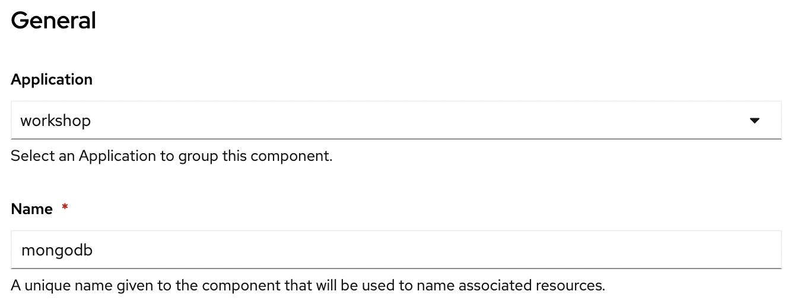
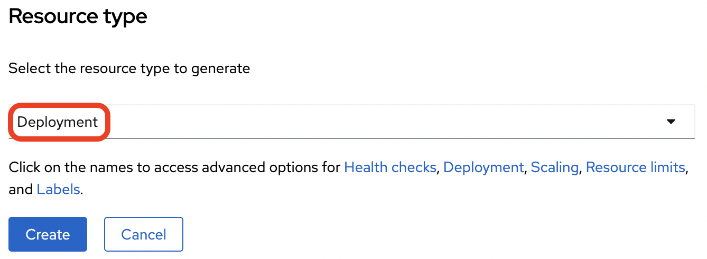
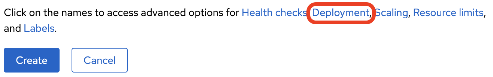
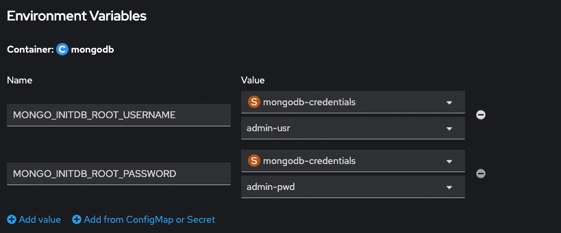
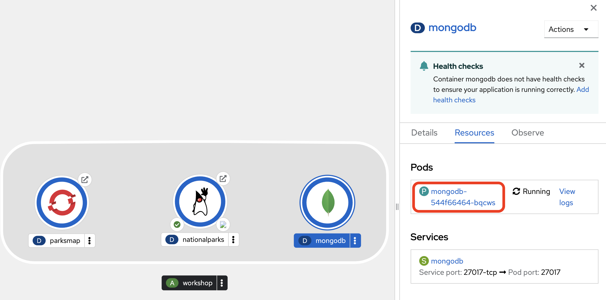
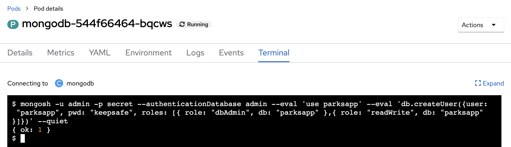
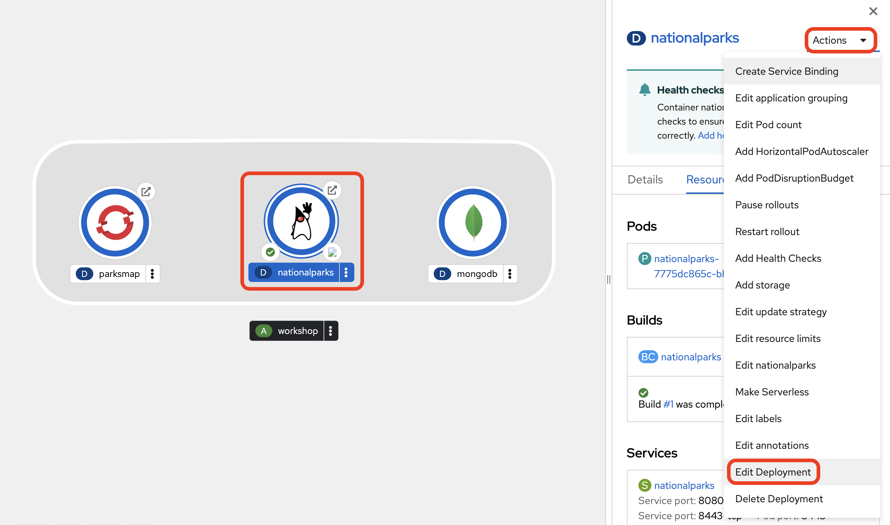
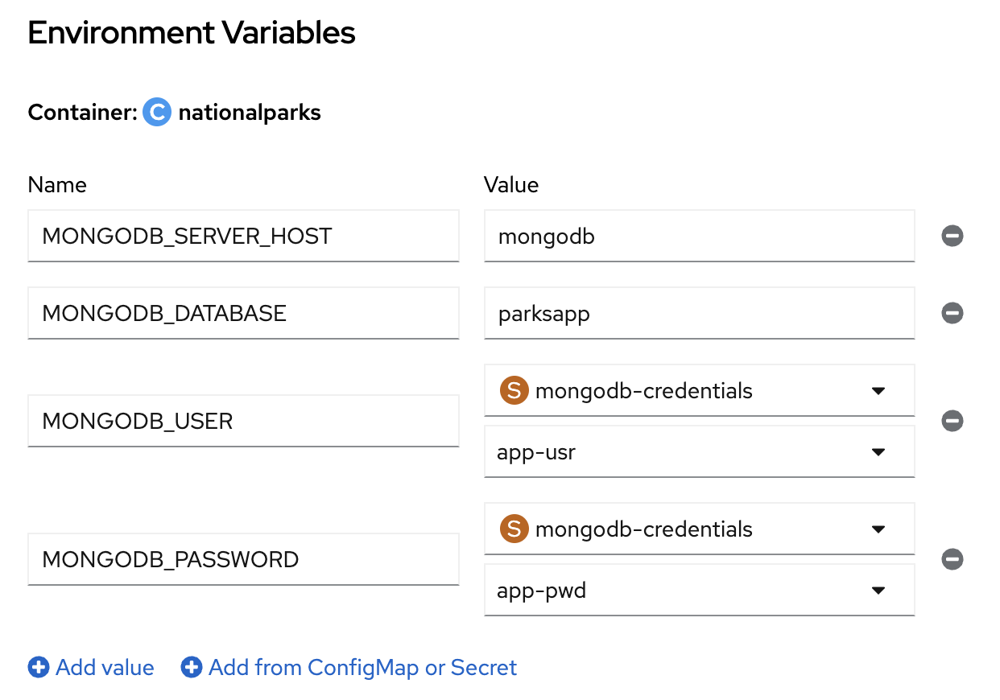
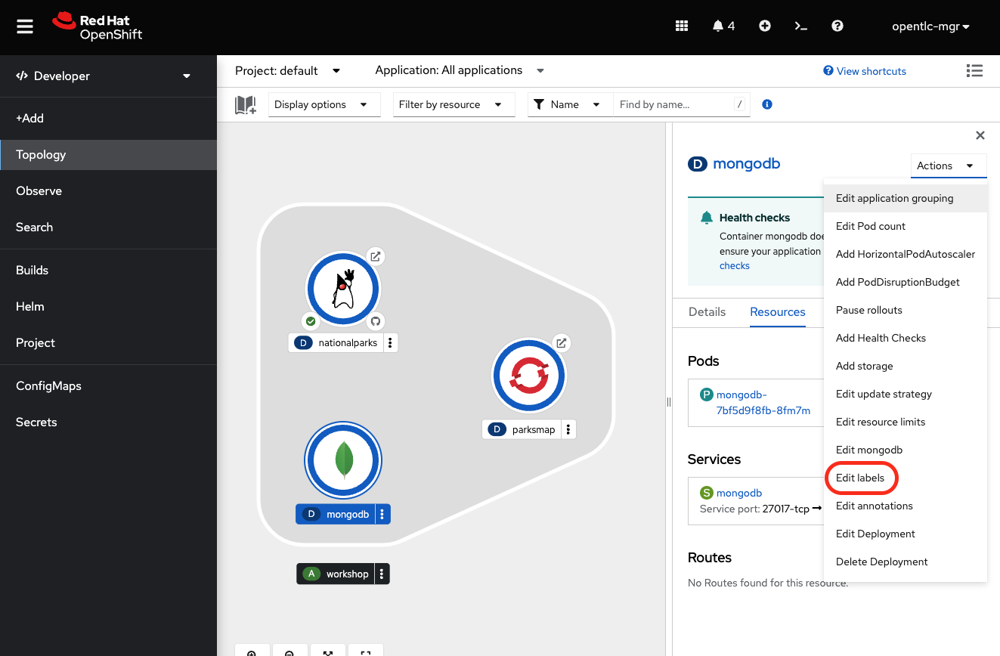
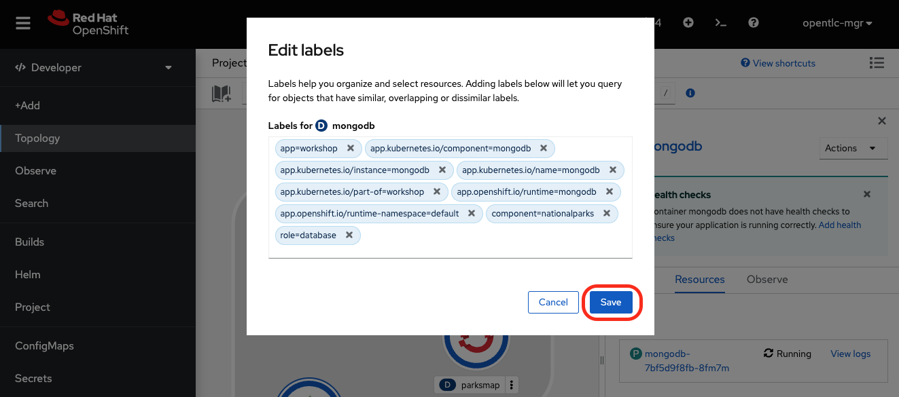

Connecting to a Database In this section we will deploy and connect a MongoDB database where the nationalparks application will store location information. Finally, we will mark the nationalparks application as a backend for the map visualization tool, so that it can be dynamically discovered by the parksmap component using the OpenShift discovery mechanism and the map will be displayed automatically. Background: Storage Most useful applications are "stateful" or "dynamic" in some way, and this is usually achieved with a database or other data storage. In this lab we are going to add MongoDB to our nationalparks application and then rewire it to talk to the database using environment variables via a secret. Exercise: Deploy MongoDB MongoDB Community Image The first step is to create Kubernetes Secrets which are used to store database-related configuration and credentials. In the Developer perspective, choose Secrets in the left nagivation menu, then click the Create button in the upper right and select key/value secret. In the dialog, fill in the entries shown below, by adding four key/value pairs in total. Secret Name → mongodb-credentials key: admin-usr | value: admin key: admin-pwd | value: secret key: app-usr | value: parksapp key: app-pwd | value: keepsafe Click the Create button at the bottom of the form. With the secret in place, click on +Add from the left navigation bar on the Developer perspective. Then choose the tile for adding Container images which will open up the Deploy Image dialog. Fill in the following details: Image section: Image name from external registry → mongo:6.0.4 Runtime icon → choose mongodb General section: Application → workshop Name → mongodb  Advanced options: Create route → uncheck because no route is needed to the DB instance itself Click on Resource type to show its settings. Make sure that the drop-down for resource type is set to the Deployment option.  Click on Deployment to show its settings.  Here, we’ll add the following two environment variables which will be sourced from the previously created secret named mongodb-credentials. Click +Add from ConfigMap or Secret and enter MONGO_INITDB_ROOT_USERNAME as the name. For the value, choose mongodb-credentials as resource and admin-usr as key. Again, click +Add from ConfigMap or Secret and enter MONGO_INITDB_ROOT_PASSWORD as the name. For the value, choose mongodb-credentials as resource and admin-pwd as key.  Finally click the Create button at the bottom of the page to deploy MongoDB into your topology. The next step is to create a specific user in this MongoDB instance which the nationalparks application will use to create a connection. For this click the MongoDB deployment in your topology view, then click on the corresponding pod shown in the right view pane.  You will end up in the pod details view where you can click Terminal to start a terminal session in the underlying container.  Copy and paste the following snippet into the terminal window to create a database user with the proper settings and roles: mongosh -u admin -p secret --authenticationDatabase admin --eval 'use parksapp' --eval 'db.createUser({user: "parksapp", pwd: "keepsafe", roles: [{ role: "dbAdmin", db: "parksapp" },{ role: "readWrite", db: "parksapp" }]})' --quiet If the command is successful you see the output below: { ok: 1 } With that, everything regarding the database is prepared and we can switch our focus back to the nationalparks application. Go back to the Topology View, click the nationalparks deployment and choose Actions > Edit Deployment from the drop-down in the right view pane.  In the Edit Deployment dialog, scroll down to the Environment Variables section and add the following four entries. First set the server host and the database: MONGODB_SERVER_HOST: mongodb MONGODB_DATABASE: parksapp The other two are credentials which are sourced from the mongodb-credentials secret. Click +Add from ConfigMap or Secret and enter MONGODB_USER as the name. For the value, choose mongodb-credentials as resource and app-usr as key. Again, click +Add from ConfigMap or Secret and enter MONGODB_PASSWORD as the name. For the value, choose mongodb-credentials as resource and app-pwd as key.  Finally hit the Save button at the bottom of the dialog. This will trigger a re-creation of a new pod and restart the application which should now be able to successfully talk to the MongoDB instance you just deployed earlier. Exercise: Adding Labels Next, let’s fix the labels assigned to the MongoDB deployment. From the Topology view, select the MongoDB deployment and choose Actions > Edit Labels.  Like before, we’ll add 3 labels: The name of the Application group: app=workshop Next the name of this deployment. component=nationalparks And finally, the role this component plays in the overall application. role=database  Exercise: Exploring OpenShift Magic As soon as we connected our database, some magic happened. OpenShift decided that this was a significant enough change to warrant updating the internal version number of the ReplicaSet. You can verify this by looking at the output of oc get rs: NAME DESIRED CURRENT READY AGE nationalparks-58bd4758fc 0 0 0 4m58s nationalparks-7445576cd9 0 0 0 6m42s nationalparks-789c6bc4f4 1 1 1 41s parksmap-57df75c46d 1 1 1 8m24s parksmap-65c4f8b676 0 0 0 18m We see that the DESIRED and CURRENT number of instances for the current deployment. The desired and current number of the other instances are 0. This means that OpenShift has gracefully torn down our "old" application and stood up a "new" instance. Exercise: Data, Data, Everywhere Now that we have a database deployed, we can again visit the nationalparks web service to query for data: https://nationalparks-%PROJECT%.%CLUSTER_SUBDOMAIN%/ws/data/all And the result? [] Where’s the data? Think about the process you went through. You deployed the application and then deployed the database. Nothing actually loaded anything INTO the database, though. The application provides an endpoint to do just that: https://nationalparks-%PROJECT%.%CLUSTER_SUBDOMAIN%/ws/data/load And the result? Items inserted in database: 2893 If you then go back to /ws/data/all you will see tons of JSON data now. That’s great. Our parks map should finally work! There are some errors reported with browsers like Firefox 54 that don’t properly parse the resulting JSON. It’s a browser problem, and the application is working properly. https://parksmap-%PROJECT%.%CLUSTER_SUBDOMAIN% Hmm… There’s just one thing. The main map STILL isn’t displaying the parks. That’s because the front end parks map only tries to talk to services that have the right Label. You are probably wondering how the database connection magically started working? When deploying applications to OpenShift, it is always best to use environment variables, secrets, or configMaps to define connections to dependent systems. This allows for application portability across different environments. The source file that performs the connection as well as creates the database schema can be viewed here: http://www.github.com/openshift-roadshow/nationalparks/blob/master/src/main/java/com/openshift/evg/roadshow/parks/db/MongoDBConnection.java#L44-l48 In short summary: By referring to bindings to connect to services (like databases), it can be trivial to promote applications throughout different lifecycle environments on OpenShift without having to modify application code. Exercise: Working With Labels We explored how a Label is just a key=value pair earlier when looking at Services and Routes and Selectors. In general, a Label is simply an arbitrary key=value pair. It could be anything. pizza=pepperoni pet=dog openshift=awesome In the case of the parks map, the application is actually querying the OpenShift API and asking about the Routes and Services in the project. If any of them have a Label that is type=parksmap-backend, the application knows to interrogate the endpoints to look for map data. You can see the code that does this here. Fortunately, the command line provides a convenient way for us to manipulate labels. describe the nationalparks service: oc describe route nationalparks Name: nationalparks Namespace: %PROJECT% Created: 2 hours ago Labels: app=workshop app.kubernetes.io/component=nationalparks app.kubernetes.io/instance=nationalparks app.kubernetes.io/name=java app.kubernetes.io/part-of=workshop app.openshift.io/runtime=java app.openshift.io/runtime-version=11 component=nationalparks role=backend Annotations: openshift.io/host.generated=true Requested Host: nationalparks-%PROJECT%.%CLUSTER_SUBDOMAIN% exposed on router router 2 hours ago Path: <none> TLS Termination: <none> Insecure Policy: <none> Endpoint Port: 8080-tcp Service: nationalparks Weight: 100 (100%) Endpoints: 10.1.9.8:8080 You see that it already has some labels. Now, use oc label: oc label route nationalparks type=parksmap-backend You will see something like: route.route.openshift.io/nationalparks labeled If you check your browser now: https://parksmap-%PROJECT%.%CLUSTER_SUBDOMAIN%/ You’ll notice that the parks suddenly are showing up. That’s really cool! Nationalparks Java App Application Healthchecks